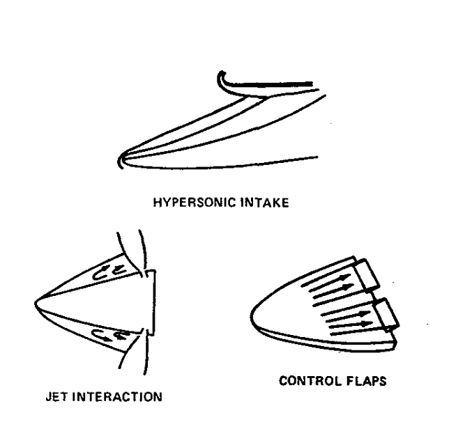
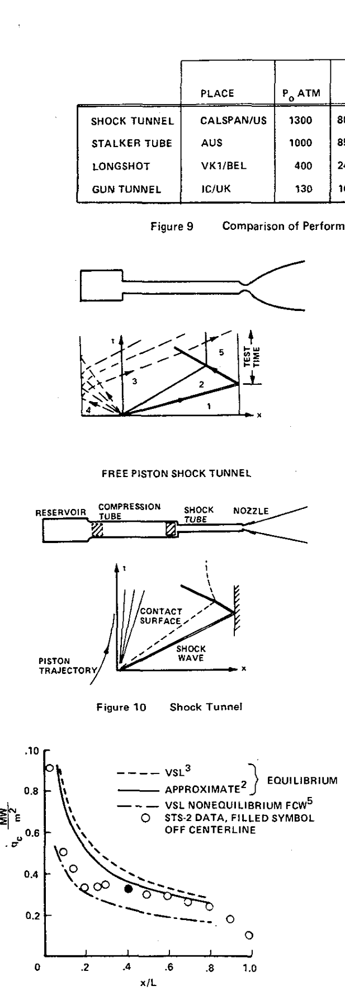
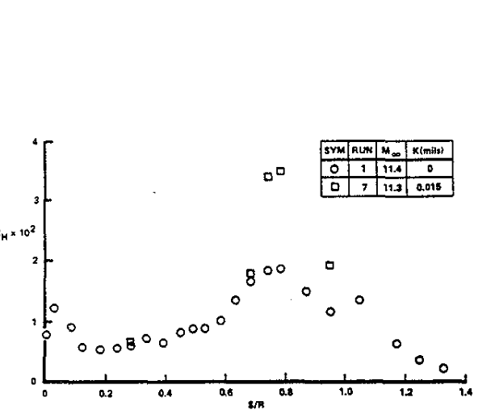
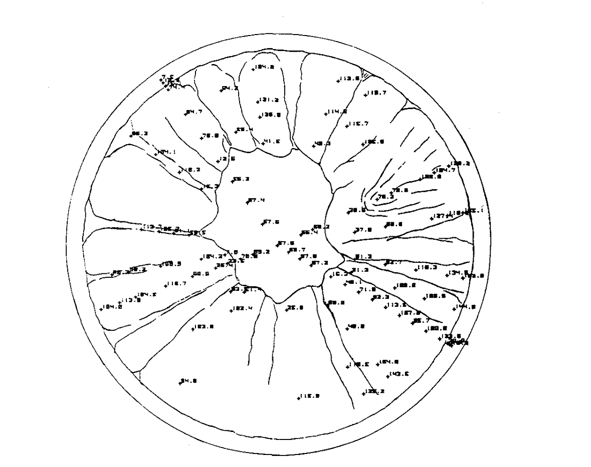

01中文摘要
综述高超声速飞行中的若干重要气动热问题，重点在粘性/无粘干扰。讨论当前关注的高超声速飞行器流动区域及现有实验设施对真实气体现象的模拟能力；评述高空飞行的粘性干扰与真实气体效应及所需测量；回顾与飞行器控制面和进气道相关的二维/三维激波-层流边界层干扰；讨论高超声速转捩区、钝头体与后掠前缘转捩、凹坑鼻锥激波干扰、表面粗糙度与吹气效应；最后评述二维/三维激波-湍流边界层干扰的固有非定常性、可能压缩性效应及剪切层混合增长率下降。
02阅读说明
文章类型：会议综述（AIAA-86-0267，AIAA 24th Aerospace Sciences Meeting，1986，42 页：正文 18 页 + 图 1-70 位于 PDF p.19-42）。材料范围：bundle 2188 行，正文 p.1-18 全文与图页清单均已读至末尾；另用 PDF p.21、p.23、p.30、p.32 核对图 3、图 9 设施表、图 11、图 31、图 38。图表可读性：正文可读但 OCR 错误较多；公式层严重损坏（粗糙度密度、Nikuradse、Finson、Dirling 等关系式无法可靠复原）；图注多为 OCR 噪声。信息完整度：高（129 篇参考文献、70 幅图、覆盖 M≈2-20 与 Re 至 3×10^7 量级），但多数定量结论是作者团队实验与他人文献的二手归纳。提取口径：以正文明确陈述为主；图内数值只取可读标注，无法确认处注明。 文章类型：期刊、综述
03一句话核心与三句话摘要
综述高超声速气动热难题：层流/湍流黏性干扰、转捩、粗糙度与吹气、激波干扰，指出预测与地面模拟能力均不足。
- 问题与缺口：跨大气层飞行器、机动再入体、轨道转移飞行器和更小型航天飞机的设计需要准确预测层流与湍流黏性干扰、转捩、粗糙壁与吹气、激波/边界层及激波/激波干扰产生的压力与热流，但现有预测能力不足以支撑设计，高焓地面设施也在减少。 原文明确
- 方法与范围：按飞行 regime 与流动现象分十节综述，比较 Calspan 激波风洞、Stalker 管、Longshot、Gun tunnel 等设施能力，并把 Calspan 实验、弹道靶与飞行数据同积分边界层方法、全 Navier-Stokes 解及经验关联式对比；覆盖 M≈2-20、设施 Re_D 至 250×10^6、速度至 20,000 ft/s。 AI概括
- 结论：层流干扰的积分/NS 方法基本可用但大分离区长度仅约实验的 0.6；二维湍流干扰对湍流模型极敏感而三维干扰较稳健；粗糙度与吹气效应非叠加；激波-激波 Type IV 热流可达驻点两个数量级；亟需高焓、高 Re、全湍流试验与新的转捩/湍流模型。 AI概括
04核心内容清单
| 要点 | 类型 | 重要性 | 原文依据 | 属性 |
|---|---|---|---|---|
| 现有预测能力不足以支撑新型跨大气层、机动再入、轨道转移与小型航天飞机设计；作者列出低密度真实气体/催化、层流干扰控制、转捩、激波/湍流干扰、化学反应湍流剪切流、烧蚀/发汗冷却边界层等离子体结构六个问题领域。 | 总判断 | A | PDF p.3（§I） | 原文明确 |
| 地面设施难以同时模拟高焓真实气体与高 Re/长试验时间：多数高 Re 设施用氮气、速度≤6000 ft/s；仅 Calspan 激波风洞与 Stalker 管能产生>7000 K 清洁空气；速度>10,000 ft/s 时氧完全解离、氮解离/电离开始，催化不确定性可致热流误差达 300%。 | 设施与真实气体 | A | PDF p.4-5、图 9（PDF p.23） | 原文明确 |
| 层流二维干扰：尖前缘黏性干扰延伸 20δ、压力升高两个数量级至无黏楔值；钝前缘襟翼压力/热流≤5 倍；钝化减小回流区但不改分离角；圆角需≥15δ 才改变分离角；NS 解在充分分离工况只给出约 0.6 倍实验分离区长度。 | 层流干扰 | A | PDF p.6（§IV）、图 17 | 原文明确 |
| 层流三维角区：近角区两边界层相互干扰使热流降低，远角区涡系与再附使热流升高；两楔激波由第三激波连接，滑移面伸向角区；无黏激波捕捉准确，但层流黏性特征预测明显较差。 | 层流三维干扰 | B | PDF p.7（§IV）、图 19-20 | 原文明确 |
| 转捩：地面数据只有在转捩由粗糙度或物体表面扰动触发（by-pass）时才能较好外推到飞行；约 1/1000 英寸表面不平度即可触发跨大气层轨迹大部分区域的转捩；后掠前缘附着线 crossflow Re≈210 与 Mach 数无关（待验证）；转捩长度约 50-100δ。 | 转捩 | A | PDF p.7-8（§V） | 原文明确 |
| 凹坑头锥：靠近声速区的转捩引发初始凹坑，凹坑底部再压缩激波/边界层干扰产生大热流；再附/再压缩热流可接近驻点 3 倍；Mach 数增大使分离区减小、再压缩热流系数增大；NRV 回收头锥呈三维沟槽形状，形状变化程序无法预测。 | 头锥/前缘 | A | PDF p.8-9（§VI）、图 34-38 | 原文明确 |
| 粗糙度与吹气：粗糙度增大分离干扰区与再附热流，零吹气粗糙半球热流增强因子>1.7；少量吹气 λ/ρu∞=0.032 使热流降到接近光滑水平；二者效应非叠加，程序分开计算再叠加的做法可能显著错误；低速绝热关联式（Nikuradse/Dirling/Dvorak/Simpson）不能直接用于高超声速非绝热壁，Finson 模型系统性高估。 | 粗糙度/吹气 | A | PDF p.9-11（§VII）、图 31、44-47 | 原文明确 |
| 二维湍流激波/边界层干扰：分离先在层流底层发生；分离点以 1/4-1/3δ 振幅、1-10 kHz 频率流向振荡；总压升相同时楔致与激波致分离流平均分布相似；最大压力/热流在 M=2-13 可相关；Re 对分离区尺寸的影响未决——绝热壁与高超声速深冷壁实验趋势相反。 | 二维湍流干扰 | A | PDF p.12（§VIII）、图 49-52 | 原文明确 |
| 二维湍流干扰的 NS 预测对湍流模型极敏感，需用“匹配分离区长度”等经验手段；Horstmann 两方程模型对 Settles 楔致分离较好，却完全漏判 Holden M=11.2 入射激波分离；三维后掠激波数据与 NS 更吻合、对模型不敏感，作者归因于压力/惯性项主导。 | 湍流建模 | A | PDF p.12-13（§VIII）、图 53-56 | 原文明确 |
| 后掠激波干扰的初始分离判据存在争议（流线汇聚 vs 压力拐点）；Korkegi 的低 Mach 关联与 M=6/11 数据不符；热流平台可标记分离；平台压力更符合二维无黏 Reshotko-Tucker 理论；斜激波 crossflow 影响未决：40° 后掠下 Settles 见近 3 倍分离长度增长，Holden 见 10% 减小。 | 三维激波干扰 | A | PDF p.13-14（§VIII）、图 57-65 | 原文明确 |
| 激波-激波干扰按 Edney 分六类，Type IV 的超声速射流冲击壁面产生最大热流，可达驻点值两个数量级；X-15 腹鳍在 M=6.7 因激波干扰烧穿；现有数据多在较低 Re、有限 Mach 范围，需高 Re 全湍流数据。 | 激波-激波干扰 | A | PDF p.14（§VIII）、图 66-67 | 原文明确 |
| 压缩性使超声速同轴混合的 spreading rate 随 Mach 数显著下降，高超声速尾迹增长也变慢；机制未定（小涡阻尼、超声速速度亏损、涡/激波分叉等），对超燃冲压氢/空气混合有直接影响。 | 压缩性混合 | A | PDF p.14-15（§IX）、图 68-70 | 原文明确 |
05引言：研究问题与领域缺口
【原文明确】作者从新型跨大气层飞行器、机动再入体、轨道转移飞行器和更小型航天飞机的设计需求出发，指出过去二十年高超声速研究多服务于航天飞机、木星进入体、弹道与机动再入体等保守系统；面对更复杂、更高效的新系统，“our current predictive capability is not able to support the design of such systems”（PDF p.3）。作者列出必须解决的六个基础问题：低密度过渡区中真实气体与表面催化下的流动理解与预测；进气道与控制面上非平衡空气层流黏性/无黏干扰区的控制；复杂与简单外形上转捩的预测；激波/湍流边界层干扰区预测；化学反应湍流剪切流；烧蚀或发汗冷却湍流边界层中的等离子体结构（PDF p.3）。两个具体缺口是：层流分离流加非平衡化学的全 Navier-Stokes 解尚未获得；二维湍流分离的激波/边界层干扰尚未能用全 NS 方程详细数值分析（PDF p.3）。综述目标是梳理这些气动热问题，重点放在黏性/无黏干扰，并说明设计者最需要、但现有方法最不可靠的环节。
06流动条件与几何构型
| 项目 | 数值/描述 | 依据 | 备注 |
|---|---|---|---|
| 飞行速度：真实气体显著区间 | >10,000 ft/s：氧完全解离，氮解离与电离开始；表面反应开始影响加热 | PDF p.4（§II） | 作者给出的真实气体 onset，并非设施能力 |
| 飞行速度：设施建设目标 | 清洁反应气流至 20,000 ft/s；湍流试验至 Mach 20 | PDF p.15（§X） | 作者建议的近期优先级 |
| 高海拔低密度 regime | 高度>150,000 ft：N2 复合速率滞后、O2 仍完全解离；壁面滑移与催化重要 | PDF p.5（§III） | 此 regime 的 NS 方程本身定义不如连续流明确 |
| Calspan 激波风洞 | Po=1300 atm；To=8000 K；M=6.5-20；Re_D=0.02-250×10^6；喷管直径 120 cm；试验时间 20-0.7 ms | 图 9（PDF p.23，页脚 p.21） | 已用 PDF 原页核对；Re_D 基于喷管直径 |
| Stalker 管 | Po=1000 atm；To=8599 K；M=8；Re_D=4×10^6；喷管直径 25 cm；试验时间 0.2 ms | 图 9（PDF p.23） | To 表内为 8599 K，正文另称可到 9000 K |
| Longshot | Po=400 atm；To=2400 K；M=15-20；Re_D=3-1.5×10^6；喷管直径 15 cm；试验时间 40 ms | 图 9（PDF p.23） | 正文称 Gun/Longshot 目前驻点温度<2000 K，与表中 To 的物理含义需区分 |
| Gun tunnel | Po=130 atm；To=1000 K；M=9.3；Re_D=25×10^6；喷管直径 45 cm；试验时间 5 ms | 图 9（PDF p.23） | 同上，To 与驻点温度含义需核对 |
| 试验时间需求 | 简单边界层<1 ms；含吹气/分离的复杂流场约 3 ms；10 ms 高焓设施可覆盖多数流动 | PDF p.4-5（§II） | 作者经验判断，无系统统计 |
| 层流二维干扰实验/计算 | 尖/钝前缘平板-楔与二维压缩拐角；低高超声速至 M=16；深冷壁；具体 Re 文中未给出 | PDF p.6（§IV）、图 14-17 | Hung-MacCormack NS 对比 M=16 实验 |
| 层流三维角区 | 90° 相交尖前缘楔；Stainback M=5 与 M=8；Charwat-Redekeopp M=2-4；Watson-Weinstein 高超声速 | PDF p.7（§IV）、图 19-20 | Re 范围未在正文给出 |
| 二维湍流激波/边界层干扰 | M=13 楔致与入射激波致分离；Holden 数据 Re 至 3×10^7；高冷壁；另有 M=2-13 相关数据 | PDF p.12（§VIII）、图 49-52 | 二维湍流分离的非定常测量 |
| 三维角区/后掠激波 | M=3 绝热壁（Dolling 系列）；M=11 高冷壁（Holden）；θ=12.5° 与 15°；后掠角 0° 与约 30°（OCR 作 33°） | PDF p.13-14（§VIII）、图 63-65 | Holden 试验 Re/ft 标注 OCR 不清，未引用具体值 |
| NRV 头锥 | M=11；Re/L=10×10^6；α=0°（图 38）；纹影模型 M=11.3、Re/ft=10×10^6（图 37） | PDF p.9（§VI）、图 37-38 | Reft OCR 作 RelFT，按图注读作 Re/ft |
| 粗糙度/吹气 | M=11.4；Re_D=12×10^6（图 31）；Voisinet 组合效应 M=6 绝热壁；吹气 λ/ρu∞=0.032（图 44） | PDF p.9-11（§VII） | 图 44 的裁剪图实为正文文本块，未采用为图件 |
| 激波-激波干扰 | Edney 纹影 M=4.6（图 67）；X-15 腹鳍 M=6.7；Type IV 热流可达驻点两个数量级 | PDF p.14（§VIII） | 现有数据 Re 较低、Mach 范围有限 |
| 压缩性混合 | 相对 Mach 数至 3；密度比至 2.7（Padova 等）；Birch-Eggers 与 Maydew-Reed 数据区间 | PDF p.14-15（§IX） | 非反应气体同轴混合 |
07核心现象与关键参数
| 参数 | 定义 | 数值 | 关系/说明 | 依据 |
|---|---|---|---|---|
| 真实气体 onset 速度 | 氧完全解离、氮解离与电离开始的来流速度 | >10,000 ft/s | 超过此值表面反应与真实气体效应开始影响加热和干扰区结构 | PDF p.4 |
| 清洁空气总温能力 | 能同时激发氧与氮的高焓设施总温 | >7000 K（Calspan 激波风洞、Stalker 管）；Stalker 可到 9000 K | 多数高 Re 设施用氮气且≤6000 ft/s，无法覆盖真实气体 | PDF p.4-5、图 9 |
| 催化不确定性导致的热流误差 | 当前表面催化预测方法不确定度对热流的影响 | 可达 300% | 完全催化与非催化壁热流差别可达 2 倍；催化模型是真实气体预测的关键缺口 | PDF p.4-5 |
| 层流干扰上游影响范围 | 尖前缘拐角下游黏性干扰延伸距离，以边界层厚度 δ 计 | 20δ | 该处压力已升至无黏楔值，升幅两个数量级 | PDF p.6、图 15 |
| 钝前缘襟翼压力/热流放大倍数 | 钝前缘构型相对拐角上游值的最大压力与热流比 | ≤5 倍 | 熵吞主导，显著低于尖前缘干扰 | PDF p.6、图 15 |
| 改变分离角所需圆角半径 | 使不分离转折角发生变化的拐角圆角半径，以初始边界层厚度计 | ≥15δ | 小于此值时圆角对分离角无显著影响，与湍流流不同 | PDF p.6 |
| 层流分离区 NS 预测/实验长度比 | 充分分离工况下 Navier-Stokes 解与实验的分离区长度之比 | 约 0.6 | 平台与再附区分布形式和绝对值较好，但分离区明显偏短 | PDF p.6、图 17 |
| 转捩触发粗糙度 | 跨大气层轨迹大部分区域足以触发转捩的表面不平度 | 约 1/1000 英寸 | 支持 by-pass 转捩机制与地面数据外推 | PDF p.8 |
| 后掠前缘附着线 crossflow 雷诺数 | 附着线转捩发生时的 crossflow 雷诺数 | 约 210（与 Mach 数无关，待验证） | 用于高后掠机翼/进气道前缘转捩判据 | PDF p.8、图 29 |
| 转捩区长度 | 转捩开始到湍流边界层接近平衡所需距离，以 δ 计 | 50-100δ | 转捩区大尺度涡导致热流 overshoot，之后才逐渐平衡 | PDF p.8 |
| NRV 再附/再压缩热流 | 凹坑头锥再附与再压缩区热流相对驻点值的倍数 | 接近 3 倍 | 由转捩、边界层变薄与熵吞共同造成 | PDF p.9、图 38 |
| 粗糙度热流增强因子 | 零吹气粗糙表面相对光滑表面的热流增强倍数 | >1.7 | 粗糙度同时增大分离干扰区与再附热流 | PDF p.11、图 44 |
| 吹气质量流率参数 | 发汗冷却无量纲吹气率 λ/ρu∞ | 0.032 | 少量吹气即可使粗糙模型大部分区域热流降到接近光滑水平 | PDF p.11、图 44 |
| 二维湍流分离点振荡 | 分离点流向振幅与频率 | 振幅约 1/4-1/3δ；频率 1-10 kHz | 表明分离区本质非定常，时间/质量平均 NS 的适用性存疑 | PDF p.12、图 51 |
| 激波-激波 Type IV 热流 | Edney Type IV 干扰相对驻点热流的放大倍数 | 可达两个数量级（约 100 倍） | Type IV 的超声速射流冲击壁面，是六类干扰中加热最强的一类 | PDF p.14、图 67 |
| 后掠/斜激波 crossflow 对分离长度的影响 | 40° 后掠或斜激波 crossflow 下分离区长度相对二维值的变化 | Settles：近 3 倍增长；Holden：10% 减小 | 两者矛盾未解决，说明三维干扰缩放规律不成熟 | PDF p.14、图 65 |
08方法与数据
【原文明确】本文是综述而非单一实验或计算研究：没有说明文献检索范围、纳入标准或系统评价流程；按现象分为设施与飞行 regime、真实气体与黏性干扰、层流二维/三维干扰、转捩、头锥与前缘、粗糙度与吹气、二维/三维湍流激波干扰、压缩性混合、结论共十节（PDF p.2-16）。证据来源包括：Calspan 激波风洞与 96 英寸激波风洞实验、弹道靶、飞行试验（航天飞机 STS-1/2/3、NRV 头锥、X-15 腹鳍）；测量手段包括薄膜热流计、压力传感器、皮托压力、油流、纹影与高速摄影、动态表面摩阻（PDF p.7、p.12）。数值证据包括 Hung-MacCormack 层流分离 NS 解、Carter 的早期 NS 解、Shang-Hankey 与 Horstmann 的湍流模型解、三维角区/后掠激波 NS 解（PDF p.6、p.12-13）。理论/关联证据包括 Crocco-Lees、Honda、Lees-Reeves、Holden 加能量方程与法向压力梯度的积分方法，以及 Batt、Poll、Dirling、Dvorak/Simpson、Finson 等转捩/粗糙度关联式（PDF p.6、p.8-11）。【原文明确】设施能力用图 9 的表格比较（PDF p.23，页脚 p.21）；实验与计算对比主要以压力、热流、摩阻分布和纹影流态呈现。文中没有给出统一的不确定度预算、网格/收敛信息或实验重复性；多处结论依赖作者团队未在本文展开的报告。
| 项目 | 内容 | 依据 | 备注 |
|---|---|---|---|
| 研究类型 | 叙述性综述，按现象/飞行 regime 分十节；未说明检索范围、纳入标准或系统评价流程 | PDF p.2-3 | 结论多为作者团队实验与他人文献的归纳 |
| 高焓地面设施 | Calspan 激波风洞、Calspan 96 英寸激波风洞、Stalker 管、Longshot、Gun tunnel；图 9 比较 Po、To、M、Re_D、喷管直径、试验时间 | PDF p.4-5、图 9（PDF p.23） | 多数高 Re 设施用氮气 |
| 飞行/弹道试验 | 航天飞机 STS-1/2/3 热流与转捩数据、NRV 回收头锥、X-15 腹鳍激波干扰烧穿、弹道靶转捩数据 | PDF p.4-5、p.9、p.14 | 用于检验地面外推与真实气体/催化模型 |
| 表面测量 | 薄膜热流计、压力传感器、皮托压力、油流、动态表面摩阻、高速摄影/纹影 | PDF p.7、p.12-13 | 作者强调缺少流场内均值与脉动同步测量 |
| 积分边界层方法 | Crocco-Lees 混合理论、Honda/Lees-Reeves 加入动量矩方程、Holden 再加入能量方程与法向压力梯度 | PDF p.6 | 用于层流分离与再附加热；M>11 出现超临界响应 |
| 全 Navier-Stokes 解 | Carter 早期分离流解；Hung-MacCormack 层流分离解；三维角区与后掠激波 NS 解 | PDF p.6-7、p.12-13 | 层流非平衡化学与二维湍流分离的全 NS 详细解仍缺失 |
| 湍流模型 | Shang-Hankey 经验关系（按分离区长度匹配、快速减小湍流尺度）；Horstmann 两方程（湍流尺度与涡量）模型 | PDF p.12-13 | 二维干扰对模型极敏感；三维干扰对模型不敏感 |
| 转捩关联 | Batt 的 Re_θ 与无量纲粗糙度关联；Reda 的粗糙度雷诺数判据；Poll 的附着线 crossflow Re≈210；单位雷诺数效应 | PDF p.7-8、图 5、29-30 | 多来自低速/绝热数据，外推需谨慎 |
| 粗糙度关联 | Nikuradse 沙粒粗糙度、Schlichting 几何粗糙元、Dirling 有效沙粒高度、Dvorak/Simpson 粗糙密度参数、Finson 工程模型 | PDF p.9-11、图 39-43 | 不能直接用于高超声速非绝热壁；Finson 系统性高估 |
| 实验-计算对比 | 以壁面压力、热流、摩阻分布及纹影流态对比积分方法/NS/经验关联；关注峰值、平台、再附梯度 | PDF p.6-14 | 未给出统一误差指标或不确定度 |
| 设施/飞行外推 | 用 Re_θ、Re_θ/M_e、粗糙度雷诺数、crossflow Re 等把地面数据外推到飞行 | PDF p.4、p.8 | 仅在 by-pass/粗糙度触发时较可靠 |
| 不确定度/误差处理 | 文中未系统给出；仅零散给出催化误差 300%、完全/非催化热流差 2 倍、Finson 高估等 | PDF p.4-11 | 实验重复性、传感器误差、网格/收敛误差均未量化 |
09核心推导与公式
原文未给出从守恒律出发的完整解析推导；以下仅列出材料中可核对的定义或建模链，不补写教科书推导。
本文是综述，不以单一控制方程推导为主线，也没有给出从 Navier-Stokes 方程到最终关联式的完整推导。正文只在第 IV 节转述层流自由干扰积分方法的发展（Crocco-Lees → Honda/Lees-Reeves → Holden 加能量方程与法向压力梯度），在第 VII 节转述粗糙壁剪切的“黏性剪切 + 粗糙元形阻”分解，并引用 Nikuradse、Dvorak、Finson、Dirling 等经验/半经验关系。原文公式层在 OCR 文本中严重损坏，无法可靠复现公式与编号，故按规范设 exists=false，不补写教科书推导。
关键假设
- 综述中的推导均为引用他人工作，本文未给出完整的假设链与边界条件
- OCR 无法辨认的公式、系数与编号不作重建，避免编造
适用边界：bundle 的公式层严重损坏（如 Dvorak 粗糙密度、Nikuradse 关系、Finson 模型、Dirling 参数均出现大量乱码）；被引文献的原始推导不在材料内；按任务要求不得用外部知识补写。因此本字段只记录“原文无自含推导”这一事实，不提供可计算的关系式。
10结果：主要发现与关键证据
【原文明确】设施与飞行 regime（§II，PDF p.3-5）：速度高于 10,000 ft/s 时氧完全解离、氮的解离与电离开始；多数高 Re 高超声速设施用氮气，速度不能超过 6000 ft/s；除弹道靶外，只有 Calspan 激波风洞与澳大利亚 Stalker 管能产生高于 7000 K 的清洁空气；简单边界层在不到 1 ms 内建立，含吹气与分离的复杂流场需要约 3 ms，10 ms 高焓设施可覆盖多数感兴趣流动；Gun tunnel 与 Longshot 的驻点温度目前低于 2000 K，Stalker 可到 9000 K（PDF p.4-5）。图 9 给出四类设施参数（PDF p.23）：Calspan 激波风洞 Po=1300 atm、To=8000 K、M=6.5-20、Re_D=0.02-250×10^6、喷管 120 cm、试验时间 20-0.7 ms；Stalker 管 1000 atm、8599 K、M=8、Re_D=4×10^6、25 cm、0.2 ms；Longshot 400 atm、2400 K、M=15-20、Re_D=3-1.5×10^6、15 cm、40 ms；Gun tunnel 130 atm、1000 K、M=9.3、Re_D=25×10^6、45 cm、5 ms。
层流二维干扰（§IV，PDF p.6-7）：尖前缘平板-楔/压缩拐角的黏性干扰可延伸到拐角下游 20 个边界层厚度，压力升高两个数量级达到无黏楔值；钝前缘襟翼的压力与热流受熵吞影响，最多只升到拐角上游值的 5 倍；钝化减小干扰区内的回流区尺寸，但分离发生的楔角大致不变；圆角半径至少达到 15 个初始边界层厚度才改变不分离转折角；高冷壁层流边界层在 M>11 出现“超临界响应”，必须把法向压力梯度纳入积分方程（PDF p.6）。Hung-MacCormack NS 解在附着与小分离工况与 M=16 实验很好吻合，但充分分离工况的分离区长度仅约实验的 0.6，尽管平台与再附区分布形式和绝对值预测较好（PDF p.6，图 17）。
层流三维干扰（§IV，PDF p.7）：90° 相交楔角区中，近角区是两边界层相互干扰、热流降低；远角区是两无黏流场相交形成涡系与再附，热流升高；两楔激波由第三激波相连，滑移面从第三激波端点伸向角区；Kutler 等表明无黏激波捕捉准确，但层流黏性干扰特征预测明显较差（PDF p.7）。
转捩与头锥（§V-VI，PDF p.7-9）：地面转捩数据只有在转捩由粗糙度或物体表面扰动触发（by-pass）时才能较好外推到飞行；对跨大气层轨迹的很大一部分，约 1/1000 英寸量级的表面不平度即可触发转捩；后掠前缘附着线的 crossflow 雷诺数约 210 与 Mach 数无关（需进一步验证）；转捩长度约 50-100 个边界层厚度（PDF p.8）。凹坑头锥的初始凹坑由靠近声速区的转捩与加热引起，随后凹坑底部的激波/边界层干扰再压缩区产生大热流；再附/再压缩热流可接近驻点值的 3 倍，受转捩、边界层变薄和熵吞影响；Mach 数增大使分离区减小、再压缩区热流系数增大；NRV 回收头锥呈三维沟槽形状，形状变化程序无法预测（PDF p.8-9，图 34-38）。
粗糙度与吹气（§VII，PDF p.9-11）：粗糙度显著增大分离干扰区尺寸和再附压缩区热流；零吹气粗糙半球的热流增强因子超过 1.7；少量吹气（λ/ρu∞=0.032）使发汗冷却模型大部分区域的热流降到接近光滑模型水平；粗糙度与吹气效应不能简单叠加，而多数程序把二者分开计算再叠加；Nikuradse、Schlichting、Dirling/Simpson 等基于低速绝热数据的关联式不能直接用于高超声速非绝热壁；Finson 模型在高超声速流中系统性高估粗糙度增强热流；粗糙元周围出现激波（shocklets），使形阻/热流模型存疑（PDF p.9-11，图 31、41-47）。
二维湍流激波/边界层干扰（§VIII，PDF p.12-13）：分离先在层流底层发生，分离泡随干扰增强向前延伸并形成平台；分离点在流向以约 1/4-1/3 当地边界层厚度的振幅振荡，频率 1-10 kHz；对总压升相同的楔致与激波致分离流，平均摩阻/热流/压力分布相似；分离干扰区的最大压力与最大热流在 M=2-13 范围内可相关（图 52）；Re 对二维分离区尺寸的影响未解决：绝热壁实验显示 Re 增大使分离区减小，而高超声速深冷壁实验显示相反趋势；二维湍流干扰的 NS 预测对湍流模型极敏感，Shang-Hankey 用“匹配分离区长度”的经验关系快速减小湍流尺度，Horstmann 的两方程模型对 Settles 楔致分离较好，却完全漏判 Holden 的 M=11.2 入射激波分离（图 55-56）；三维后掠激波干扰的数据反而与 NS 更吻合，对湍流模型不敏感，作者认为其总体特征主要由无黏效应控制（PDF p.12-13）。
三维与激波/激波干扰（§VIII，PDF p.13-14）：后掠激波干扰的初始分离判据存在争议（McCabe 用流线汇聚、Stanbrook 用压力拐点）；Korkegi 在低 Mach 数给出初始分离角随上游 Mach 数反比、2<M<3.4 时压比与 Mach 数无关，但 Goldberg 与 Holden 的 M=6/11 数据不符合；热流平台的出现可标记分离；Holden 在高冷壁高超声速边界层中发现边界层比 McCabe/Korkegi 方法预测的更“顽强”；平台压力与二维无黏 Reshotko-Tucker 理论吻合优于 Scuderi 关联；峰值热流与总压升呈幂律；斜激波 crossflow 对分离长度的影响存在未决矛盾：Settles 在 40° 后掠看到近 3 倍增长，Holden 看到 10% 减小（图 65）；激波-激波干扰按 Edney 分六类，Type IV 产生冲击壁面的超声速射流、热流增强最大，可达到驻点值的两个数量级，X-15 腹鳍在 M=6.7 因激波干扰烧穿；现有激波-激波数据多在较低 Re、有限 Mach 范围，需要高 Re 全湍流数据（PDF p.14，图 66-67）。
压缩性对湍流混合（§IX，PDF p.14-15）：超声速同轴混合的 spreading rate 随 Mach 数显著下降；Padova 等在相对 Mach 数至 3、密度比至 2.7 的测量落在 Birch-Eggers 与 Maydew-Reed 之间；高超声速细长体湍流尾迹增长也更慢；机制未定，候选包括 Finson 的小涡对湍流产生的阻尼、Orenberger 的尾迹内超声速速度亏损、Bushnell 的涡/激波分叉；该效应对超燃冲压发动机氢/空气混合有直接影响（PDF p.14-15，图 68-70）。
| 发现 | 证据 | 证据类型 | 强度 | 位置 | 属性 |
|---|---|---|---|---|---|
| 现有气动热预测能力不足以支撑新型高超声速飞行器设计，缺口集中在低密度真实气体/催化、层流干扰控制、转捩、激波/湍流干扰、化学反应湍流剪切流与烧蚀/发汗冷却边界层。 | 作者明确列出六个问题领域，并称“our current predictive capability is not able to support the design of such systems”（PDF p.3） | 综述总判断 | 强 | PDF p.3（§I） | 原文明确 |
| 地面设施无法同时模拟高焓真实气体、高 Re 与足够试验时间：多数高 Re 设施用氮气且≤6000 ft/s，仅 Calspan 激波风洞与 Stalker 管能产生>7000 K 清洁空气；简单边界层需<1 ms，复杂吹气/分离流需约 3 ms，10 ms 设施可覆盖多数流动。 | 图 9 设施表（Po、To、M、Re_D、喷管直径、试验时间）与 §II 文字；速度>10,000 ft/s 时氧完全解离（PDF p.4-5、p.23） | 设施能力 | 强 | PDF p.4-5、图 9（PDF p.23） | 原文明确 |
| 层流二维干扰可用积分方法/NS 较好描述附着与小分离工况，但充分分离工况的分离区长度仅约实验的 0.6；平台与再附区分布形式和绝对值预测较好。 | “the separated region is approximately 0.6 of the length found in the experiment”（PDF p.6）；M=16 实验与 Hung-MacCormack NS 对比（图 17） | 层流干扰 | 强 | PDF p.6（§IV）、图 17 | 原文明确 |
| 转捩的地面-飞行外推只有在 by-pass/粗糙度触发时才较可靠；约 1/1000 英寸表面不平度可触发跨大气层轨迹大部分区域的转捩，附着线 crossflow Re≈210 与 Mach 数无关但需进一步验证。 | “surface irregularities of the order of 1/1000 inch would trip transition”（PDF p.8）；图 29 的 crossflow Re 关系 | 转捩 | 中 | PDF p.7-8（§V）、图 29 | 原文明确 |
| 凹坑头锥的再附/再压缩热流可接近驻点 3 倍；Mach 数增大使分离区减小而再压缩热流系数增大；NRV 回收头锥呈三维沟槽形状，现有形状变化程序无法预测。 | “heat transfer rates in the reattachment and recompression regions ... can rise to close to three times the stagnation point value”（PDF p.9）；图 34-38 | 头锥/前缘 | 强 | PDF p.8-9（§VI）、图 34-38 | 原文明确 |
| 粗糙度使热流增强>1.7 倍并增大分离干扰区；少量吹气（λ/ρu∞=0.032）使热流降到接近光滑水平；粗糙度与吹气效应非叠加，现有程序的分开计算-叠加做法可能显著错误。 | 图 44 与 §VII 文字：“the effects of surface roughness and blowing are not additive”（PDF p.10）；“heating enhancement factors of over 1.7”（PDF p.11） | 粗糙度/吹气 | 强 | PDF p.9-11（§VII）、图 44 | 原文明确 |
| 二维湍流激波/边界层干扰本质非定常：分离点以约 1/4-1/3δ 的振幅、1-10 kHz 频率振荡；Re 对分离区尺寸的影响未解决，绝热壁与高超声速深冷壁实验趋势相反。 | 图 51 的动态摩阻记录与 §VIII 文字；绝热壁 Re 增大分离区减小、深冷壁相反（PDF p.12） | 二维湍流干扰 | 强 | PDF p.12（§VIII）、图 51 | 原文明确 |
| 二维湍流干扰的 NS 预测对湍流模型极敏感，需用“匹配分离区长度”等经验手段；同一两方程模型对 Settles 楔致分离较好，却完全漏判 Holden M=11.2 入射激波分离；三维后掠激波数据与 NS 更吻合，作者归因于压力/惯性项主导。 | “the numerical solution fails to predict the characteristic plateaus”（PDF p.12）；图 53-56；三维数据对模型不敏感（PDF p.13） | 湍流建模 | 强 | PDF p.12-13（§VIII）、图 53-56 | 原文明确 |
| 激波-激波干扰 Type IV 的超声速射流冲击壁面，热流可达驻点两个数量级；X-15 腹鳍在 M=6.7 因激波干扰烧穿；现有数据 Re 较低、Mach 范围有限，需高 Re 全湍流试验。 | “Heating levels up to two orders of magnitude larger than the stagnation point value”（PDF p.14）；图 66-67 | 激波-激波干扰 | 强 | PDF p.14（§VIII）、图 66-67 | 原文明确 |
| 超声速同轴混合的 spreading rate 随 Mach 数显著下降，高超声速尾迹增长也变慢；机制未定，可能涉及小涡阻尼、超声速速度亏损或涡/激波分叉；该效应对超燃冲压燃料混合有直接影响。 | “a significant decrease in spreading rate with increased Mach number”（PDF p.14）；图 68-70；Birch-Eggers 与 Padova 数据（PDF p.14-15） | 压缩性混合 | 中 | PDF p.14-15（§IX）、图 68-70 | 原文明确 |
| 三维后掠激波干扰的初始分离判据与 crossflow 缩放仍存在未决矛盾：Korkegi 关联与 M=6/11 数据不符；40° 后掠下 Settles 见近 3 倍分离长度增长，Holden 见 10% 减小。 | 图 59-65；§VIII 明确称“Further studies are required to resolve this issue”（PDF p.14） | 三维激波干扰 | 强 | PDF p.13-14（§VIII）、图 57-65 | 原文明确 |
11机制解释与论证链
【原文明确】综述的机制主线是：高 Mach、低 Re 下层流边界层增长与外流相互干扰，产生上游影响、分离与再附，冷却壁把大部分质量与动量集中在边界层外层，使边界层控制困难；M>11 的高冷壁层流干扰出现“超临界响应”，必须引入法向压力梯度才能描述（PDF p.6）。转捩受 by-pass 机制与表面粗糙度控制：约 1/1000 英寸的粗糙度即可触发转捩，后掠前缘附着线则由 crossflow 不稳定性控制（PDF p.8）。凹坑头锥的机制链是：靠近声速区的转捩→局部加热增大→初始凹坑→凹坑底部再压缩激波/边界层干扰→再附/再压缩热流接近驻点 3 倍；Mach 数增大使分离区减小、再压缩加热系数增大（PDF p.8-9）。粗糙度的机制是：粗糙元产生激波（shocklets）、空腔流与形阻，增大动量亏损与分离倾向，从而提高再附热流；少量吹气通过改变粗糙元周围流动、消除空腔流，使等效粗糙度减小，故粗糙度与吹气效应非叠加（PDF p.9-11）。二维湍流激波/边界层干扰的机制是：分离先在层流底层发生，分离/再附激波在边界层内合并，分离点非定常摆动；二维湍流模型必须人为压缩湍流尺度以匹配分离区长度，说明现有模型没有抓住分离剪切层的湍流产生/耗散（PDF p.12-13）。三维干扰中压力与惯性项占主导，故对湍流模型不敏感；激波-激波 Type IV 则通过超声速射流冲击壁面造成极端加热（PDF p.13-14）。压缩性对混合的机制仍有三种竞争解释：小涡对湍流产生的阻尼、尾迹内超声速速度亏损、涡与激波相互作用导致涡分叉（PDF p.14-15）。
12讨论：结论、贡献与局限
【原文明确】作者的总判断是：尽管计算机能力大幅提高，过去十年对必须写入程序的基础机制的理解与建模进展很小；高超声速基础研究几乎停止，一些设施被拆除；最明显的缺口在高空超高速飞行——真实气体、非平衡、黏性干扰、滑移与催化壁效应重要的 regime，缺少地面设施（PDF p.15）。近期应优先建设能产生速度达 20,000 ft/s 的清洁反应气流的地面设施，以及能在 Mach 20 气流中研究湍流流动的设施（PDF p.15）。作者认为转捩与激波/湍流边界层干扰是最难也最重要的两个问题：转捩会突变进气道/控制面气动性能并控制前缘热载；激波干扰区的动态载荷、边界层急剧变薄、压力在几个边界层厚度内升高两个数量级，使时间/质量平均 NS 能否描述本质非定常分离流成为疑问（PDF p.15-16）。【AI概括】作者反复强调三类方法学问题：二维湍流干扰的“成功”常靠人为调节湍流模型去匹配分离区长度，缺乏可迁移性；三维干扰与 NS 的较好吻合可能只是因为压力/惯性项占主导，并不能证明湍流模型正确；粗糙度/吹气/转捩的关联式多来自低速绝热数据，直接外推到高超声速非绝热壁缺乏依据。作者还指出，现有数据几乎都是表面平均量，缺少流场内的均值与脉动同步测量，难以检验模型（PDF p.15-16）。
作者结论
【原文明确】作者的总结论是：面对更复杂、更高效的新一代高超声速飞行器，现有预测能力在多个重要领域不足；过去十年计算能力提高，但基础机制理解与建模进展很小，高超声速基础研究几乎停止、部分设施被拆除。最明显的缺口是高空超高速飞行：真实气体、非平衡、黏性干扰、滑移与催化壁效应重要，却缺少能产生清洁反应气流的高焓地面设施。近期应优先建设速度达 20,000 ft/s 的清洁反应气流设施，以及 Mach 20 湍流试验能力（PDF p.15）。【原文明确】转捩与激波/湍流边界层干扰被列为最难、最重要的问题；二维湍流分离的 NS 预测依赖“匹配分离区长度”等经验修正，三维干扰的较好吻合可能只是因为压力/惯性项主导；粗糙度与吹气效应非叠加，基于低速绝热数据的关联式不能直接用于高超声速非绝热壁；激波-激波 Type IV 可产生驻点两个数量级的热流（PDF p.12-16）。【AI概括】因此，本文的结论不是给出某个设计判据，而是给出一个研究优先级清单：高焓设施、全湍流高 Re 数据、非定常分离流测量与可迁移的湍流/转捩模型。
主要贡献
- 把高超声速气动热问题组织为“设施能力—真实气体/催化—层流干扰—转捩/头锥—粗糙度/吹气—二维/三维湍流干扰—压缩性混合”的完整链条，便于设计者定位缺口。
- 用图 9 的定量表格比较 Calspan 激波风洞、Stalker 管、Longshot、Gun tunnel 的 Po、To、M、Re_D、喷管直径与试验时间，明确高焓与高 Re/长试验时间不可兼得。
- 系统汇总层流二维/三维干扰的定量特征（20δ、两个数量级、5 倍、15δ、0.6），并指出 NS 在大分离区的系统性偏短。
- 把粗糙度与吹气的非叠加性、低速关联式在高超声速非绝热壁的失效、Finson 模型的高估写成明确警告，并给出 1.7 倍增强与 0.032 吹气的定量锚点。
- 揭示二维与三维湍流干扰对湍流模型敏感性的差异，并指出三维“成功”可能只是压力/惯性主导，不能证明模型正确。
- 汇总激波-激波 Edney 六类、Type IV 极端加热与 X-15 烧穿案例，强调高 Re 全湍流数据的缺失。
局限与未解决问题
【作者承认】综述性质决定很多结论依赖他人或作者团队报告；二维湍流分离的 NS 预测对模型极敏感、需经验修正；三维干扰的“成功”可能只是压力/惯性主导；粗糙度/吹气非叠加且现有模型不适用；压缩性混合机制未定；催化不确定性可致 300% 热流误差；高焓设施不足、部分设施被拆除；时间/质量平均 NS 是否能描述非定常分离流存疑（PDF p.3-16）。【AI识别】本文没有说明文献检索与纳入标准，属叙述性综述而非系统评价；公式层 OCR 严重损坏，无法复核 Dvorak/Finson/Dirling 等关系式；图注多为 OCR 噪声，部分图内数值不可读；定量结果多未给不确定度、网格/收敛信息或实验重复性；部分结论基于作者团队未在本文展开的报告；图 9 的 To 与正文“Gun/Longshot 驻点温度<2000 K”存在物理含义上的差异，需回原文核对；引用文献 129 篇但未逐条评价质量。
13对高速流动与工程的意义
【AI概括】对高超声速进气道、隔离器、控制面、头锥/前缘热防护与超燃冲压的设计有直接启示：层流干扰会“填平”压缩面、降低控制效率；凹坑头锥再压缩热流可达驻点 3 倍；粗糙度可使热流增强 1.7 倍以上，少量吹气即可显著改变热流但不可与粗糙度简单叠加；二维湍流分离对湍流模型极敏感，不能把某一算例的“成功”外推到其他激波/Re 组合；激波-激波 Type IV 是热防护的最恶劣工况之一。可借鉴的实验/测量技术包括薄膜热流、动态摩阻、油流、纹影与高速摄影，以及用粗糙元/发汗模型研究组合效应。本文不能回答：具体飞行工况的定量热流、湍流模型如何选择、真实气体化学与催化的细节、非定常分离流的统计建模，以及三维干扰的通用缩放律。
14核心图件




15可引用原文素材
| 原文短句 | 可支持的观点 | 位置 | 使用建议 |
|---|---|---|---|
| “our current predictive capability is not able to support the design” | 现有预测能力不足以支撑新型飞行器设计 | PDF p.3（§I） | 全文总判断 |
| “the separated region is approximately 0.6 of the length found in the experiment” | 层流大分离区 NS 预测仅为实验的 0.6 | PDF p.6（§IV） | 定量说明 NS 的局限 |
| “surface irregularities of the order of 1/1000 inch would trip transition” | 约 1/1000 英寸粗糙度即可触发转捩 | PDF p.8（§V） | 支撑 by-pass/粗糙度转捩外推 |
| “heating enhancement factors of over 1.7” | 零吹气粗糙表面热流增强超过 1.7 倍 | PDF p.11（§VII） | 粗糙度效应的定量锚点 |
| “the effects of surface roughness and blowing are not additive” | 粗糙度与吹气效应不能简单叠加 | PDF p.10（§VII） | 批评现有程序的叠加做法 |
| “the numerical solution fails to predict the characteristic plateaus” | 二维湍流分离的 NS 解漏判压力/热流平台 | PDF p.12（§VIII） | 说明湍流模型在二维分离中的失败 |
| “Heating levels up to two orders of magnitude larger than the stagnation point value” | 激波-激波 Type IV 热流可达驻点两个数量级 | PDF p.14（§VIII） | 强调最恶劣热载工况 |
| “a significant decrease in spreading rate with increased Mach number” | 压缩性使湍流混合 spreading rate 显著下降 | PDF p.14（§IX） | 支撑超燃冲压混合问题 |
16最终核验
| 核验项 | 结论 |
|---|---|
| 仅基于全文 | 是。仅使用 bundle 的正文、图注、图件清单，以及 PDF 原页 p.21、p.23、p.30、p.32 核对图 3、图 9、图 11、图 31、图 38；未引入外部知识或文献结论。 |
| A 级要点有依据 | A 级要点均给出 PDF 页码/节/图号；设施参数用图 9 原表核对；20δ、两个数量级、5 倍、15δ、0.6、3 倍、1.7、0.032、210、Type IV 两个数量级等均有正文或图注支撑。 |
| 属性标注 | 三句话、core_points、findings 均标注属性；直接陈述标“原文明确”，跨节归纳/工程含义标“AI概括”，机制推断标“AI推断”（见 mechanism 中未逐句标注的部分）。 |
| 覆盖范围 | bundle 共 2188 行，已分三段读至文件末尾（正文 p.1-18、图页 p.19-42 清单）；图 9 等 5 幅图用 PDF 原页核对；公式层损坏处写“受限于材料，无法确认”，未补写。 |
| 无编造 | 页码、图号、设施参数、定量倍数均来自 bundle 或 PDF 原页；图 44 的裁剪图经核对为正文文本块，未作为图件使用；To 与“驻点温度<2000 K”的差异、Korkegi 公式 OCR 不清等均如实列为待核问题。 |
需回原文确认
- 图 9 中 Stalker 管 To=8599 K、Longshot To=2400 K、Gun tunnel To=1000 K 与正文“Gun/Longshot 驻点温度<2000 K”如何统一？表中的 To 是储气温度还是驻点温度？
- 图 44 的裁剪图实为正文文本块，图 44/45 的真实图题、坐标与工况需回原文核对；1.7 倍与 0.032 的定量关系是否可在原图中逐点复核？
- 二维湍流分离区随 Re 的相反趋势（绝热壁减小、深冷壁增大）作者未给出统一解释；哪一趋势适用于飞行高冷壁条件？
- Korkegi 初始分离关联式的具体形式（θ_inc 与 M 的关系、2<M<3.4 的压比判据）OCR 严重损坏，需回原文核对后再引用。
- 粗糙度与吹气非叠加的定量规律、等效粗糙度的定义在高超声速非绝热壁应如何构造？现有 Dvorak/Finson/Dirling 参数能否修正后使用？
- 压缩性使混合 spreading rate 下降的机制（湍流压缩性、相对 Mach 数、密度比、涡/激波分叉）作者列为未定；哪一机制主导超燃冲压氢/空气混合？
- 本文未说明文献检索范围与纳入标准，属叙述性综述；其“预测能力不足”的总判断在多大程度上受作者自身实验/设施经验影响？
- 图 2 的飞行器速度-高度包线与设施能力对比图内数值不可读；能否回原文提取具体的 M、高度与 Re 范围以核对本文的 regime 划分？
17关联文献
依据标签、板块、构型与作者脉络自动关联，可据此追踪同一问题的前序与后续工作。
18引用格式
选择期刊风格后复制；出处保留原刊名。BibTeX 可直接用于 LaTeX。
引用格式
Holden, M. 1986 A review of aerothermal problems associated with hypersonic flight. 24th Aerospace Sciences Meeting. https://doi.org/10.2514/6.1986-267
PDF上传 PDF 并更新本页
本页缺少全文、摘要或图件时，可在浏览器本地补入 PDF。解析完全在本机完成，不上传网络；完成后会更新本页的 PDF 打开链接、原摘要、IMRaD 机器抽取、关键句与含图页面。复杂的公式语义与中文深度解读仍以原文和既有精读记录为准。